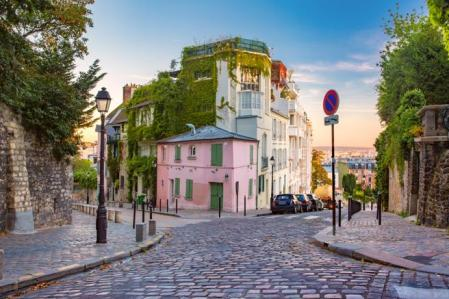

Paris
París, la ville de la Lumiere, la ciudad de la luz, es la capital turística del mundo. Y si Francia es el principal país turístico del mundo se debe en buena parte a la historia, a los monumentos y al aura de París.
Esta ciudad de orígenes romanos, Lutecia, se ha convertido gracias a los franceses, pero sobre todo a los extranjeros, en el referente mundial del buen gusto, de la cultura y de la libertad. Como en todo hay exageración, pero cierto es que la ciudad cumple en buena medida las expectativas que desde todo el mundo se han ido creando.
Actividades que puedes hacer mientras visitas Paris
París es especial porque tiene cosas que ofrecer para todos, desde la maravillosa torre Eiffel como las orillas del Sena y sus noches de tango.
La primera vez que visitas la ciudad notas magia, una magia que no desaparece jamás, por mucho que vuelvas.
Enamórate de las vidrieras de Saint Chapelle o de cualquiera de los encantadores bistró que hay en la ciudad, pasea por sus calles… un trocito de ti se quedará en París para siempre.
De hecho, una gran actriz, ya lo dijo (Audrey Hepburn) cuando afirmó que siempre es una buena idea volver a París.
- París está repleta de monumentos que, si nunca has estado allí, tienes que ver. Un ejemplo de esto es, por ejemplo, la tumba al soldado desconocido, bajo el Arco del Triunfo, o los Jardines Elíseos, donde se encuentra la mundialmente conocida Torre Eiffel.
Pero París es tan especial porque tiene otros monumentos que si bien son tan conocidos, no atraen tanto al visitante y que son igualmente maravillosos, como por ejemplo, los puentes que se reparten a lo largo del Sena o la Universidad de París.
- Hay una cosa que te podemos garantizar: en París jamás vas a aburrirte. Siempre hay cosas divertidas que puedes hacer.
Desde explorar las calles medievales del Marais hasta ir a los mercados callejeros o vivir la experiencia de escuchar un concierto en una de sus iglesias.
- La gastronomía en París es una experiencia que tienes que vivir sí o sí. En esta ciudad puedes encontrar desde restaurantes con renombre mundial hasta pequeños locales donde se te hará la boca agua.
- Visitar el Museo Louvre, sin duda el museo más famoso de la ciudad. Y con razón: harían falta días enteros para ver cada una de sus obras, aunque la estrella es ella, la Gioconda de Leonardo da Vinci.
- Visitar la torre Eiffel, es el símbolo inequívoco de París
- Jardines de Trocadero
- Paseo en barco por el Sena
- No puedes perderte el famoso Pantheon de París. Su edificio de estilo neoclásico alberga algunas de las figuras más destacadas de la cultura y política francesa, es el caso de Víctor Hugo, Jean Monnet, Pierre y Marie Curie, Voltaire, Émile Zola, Jean-Jacques Rousseau o Alexandre Dumas.
- No lejos de la Ópera se encuentra las Galerías Lafayette Haussmann donde, no solo puedes hacer shopping, sino que lo mejor te aguarda en la última planta: hay un mirador completamente gratuito desde donde tener una de las mejores panorámicas de París.
- Le Sacre Coeur es uno de los lugares mas bonitos que vimos nunca: el Sagrado Corazón detrás de nosotros y París bajo nuestros pies. Y para rematar la escena un tío tocando el arpa…. Momentazo perfecto.
Si quieres conocer mejor la Basílica del Sagrado Corazón y el barrio bohemio de Montmartre puedes tomar este tour de 12€
- Disfrutar del atardecer desde el Pont des Arts.

Conocer una de las ciudades más famosas del mundo, la ciudad del amor, seria mi gran sueño parisino hecho realidad,
las calles de esta ciudad me fascinan, su comida, la gran moda, su arquitectura y en especial su gran atracción, que es la torre Eiffel.